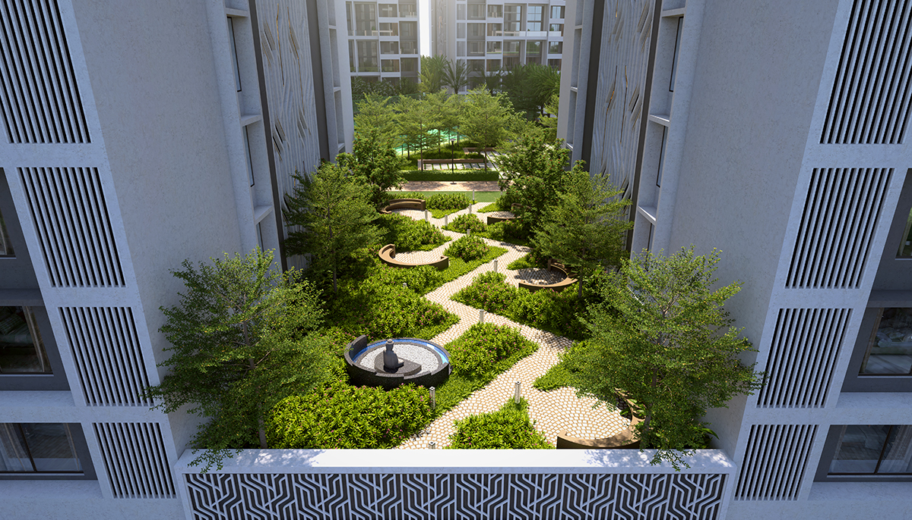

An objective analysis of the major regional transit corridors surrounding Charholi Budruk and Lohegaon — PMRDA's 128-km orbital Ring Road, Airport Terminal 2, BRTS integration, and East-North arterial widening.

| Infrastructure Node | Approx. Distance from PWC | Commute Benefit for Residents | Related Buyer Hub |
|---|---|---|---|
| PMRDA 128-km Pune Ring Road | ~1.8 km Interchange Zone | Links Alandi, Chakan & Hinjawadi bypassing city core | Ring Road Guide → |
| Pune International Airport T2 | 4.8 km (Lohegaon Side) | Supports aviation executive housing & short air travel | Airport Corridor → |
| Kharadi–Charholi Link Corridor | ~11.0 km to EON Free Zone | Direct East-North tech corridor avoiding central Nagar Rd | Kharadi Guide → |
| Internal BRTS & Alankapuram Road | Township Gate & Frontage | Daily PMPML transit & connectivity toward Vishrantwadi | Vishrantwadi Link → |
The proposed PMRDA orbital Pune Ring Road corridor passes roughly 1.8 km (~3–5 minutes) from Pride World City, creating signal-free access connecting Alandi, Chakan, Hinjawadi, and Ahmednagar Road once operational.
Increased passenger capacity at Lohegaon's Terminal 2 strengthens residential demand among aviation staff, airline crews, and frequent corporate flyers living within 10 minutes at Charholi Budruk.
A dedicated PMPML / BRTS bus station inside the township, Alankapuram–Lohegaon arterial roads, and planned direct Kharadi IT connectivity cut commute times toward EON Free Zone and Viman Nagar.